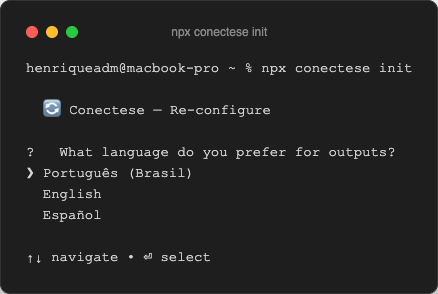
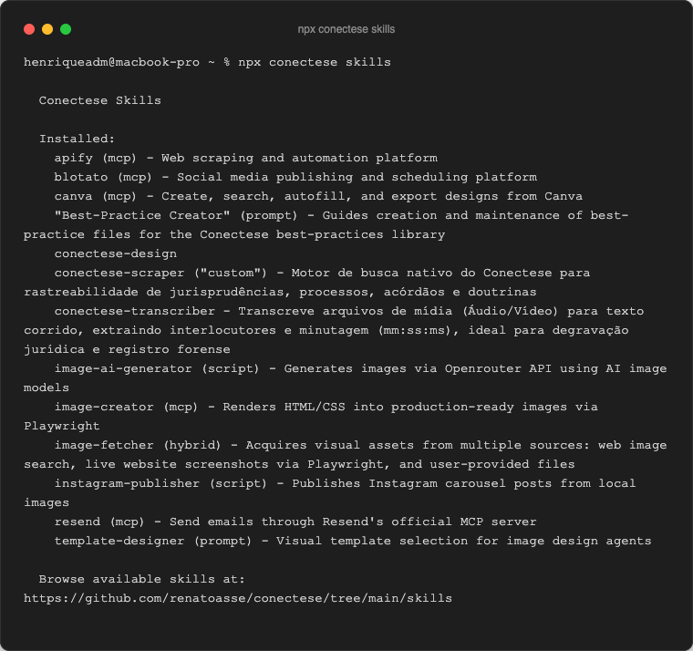
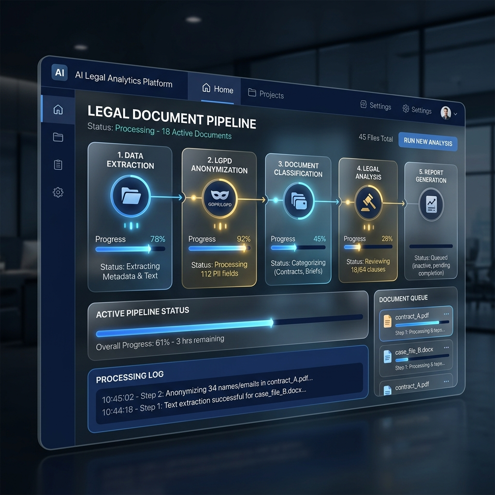

A Revolução na Análise Processual
Bem-vindo ao manual oficial do escritório para a plataforma Conecte.se. Sua equipe ágil movida a inteligência artificial para ler processos interligados, transcrever mídias faticamente e redigir contestações em questão de minutos.
O Conecte.se elimina as horas exaustivas lendo PDFs truncados e ouvindo horas de audiências, abstraindo tudo para insights fundamentados.
Guia de Instalação (NPM)
Graças a uma arquitetura limpa em Node.js (sem instalações complexas de Python ou C++), o Conecte.se roda de forma fluida em qualquer sistema (Windows, Mac ou Linux).
Instale o pacote base
Abra seu Terminal/Prompt de Comando na pasta onde deseja armazenar os dados de seus processos e digite:

Setup Inicial e Chaves
Para proteger as informações do escritório, rodaremos o setup de perfil empresarial que configurará sua identidade no contrato visual:
Isto perguntará seus dados (Logo, OAB, Whats App) salvando-os de forma irreversivelmente sigilosa em seu `.env`.
Funções Disponíveis via Terminal
Após a conclusão do processo de configuração (npx conectese init), você obtém acesso instantâneo às nossas Skills instaladas executando o comando npx conectese skills, exibindo os agentes e motores disponíveis no sistema.

Media Transcriber
Comando para transcrição direta de provas em MP3/MP4, detectando automaticamente diferentes vozes (diarização) e minutagens com precisão extrema sem necessidade de servidores na nuvem pesados.
LGPD Anonymizer
Higienização automatizada. Processa petições iniciais sensíveis, ocultando CPFs, Nomes Completos e Endereços para poder salvar no formato seguro para LGPD antes mesmo de qualquer inteligência processar o caso.
Legal Researcher
Agente robótico focado em buscar Acórdãos e Precedentes web (ex: Jusbrasil/TRFs) para fundamentar suas petições com a jurisprudência mais aderente ao caso baseando-se nos fatos ingeridos.
Visual Law Generator
Geração expressa de documentos .docx utilizando técnicas modernas de Legal Design para criar petições, fluxogramas e relatórios altamente diagramados em um estalar de dedos.
Ingestão de Processos e Arquivos
Após instalar e ativar seu painel (`npm run start`), o seu "Dashboard" ficará disponível no navegador.
A Área de Depósito (Drag and Drop)
Arraste os documentos cruciais do cliente diretamente para a tela. Aceitamos PDFs de processos inteiros, prints de tela, arquivos do Word e até arquivos de Mídia (.MP3, .MP4).
A inteligência do sistema organiza tudo sozinho. Nos bastidores, será criada uma pasta criptografada `PROCESSOS/DD_MM_AAAA_NNNN` que abrigará este caso específico.
O Trabalho dos Agentes (Pipeline)
Ao aprovar os fatos, você engatilhará nossa orquestra de 10 Agentes Cognitivos. Sente-se e observe o progresso de cada pensamento na tela interativa.

- O Transcritor (media-transcriber): Houve áudio anexado? Ele não foge. Ouve tudo e cria uma minutagem fidedigna dos locutores em Markdown.
- A Anonimização (LGPD): O sistema mascara todos os documentos brutos para que informações sigilosas se tornem [PESSOA_1] antes de saírem ou formarem banco.
- A Pesquisa (legal-researcher): O robô faz web-scraping automático (ex: varreduras precisas em Jusbrasil) atrás da jurisprudência mais quente baseada no objeto dos fatos.
O Resultado Final: Visual Law
No final do pipeline, o agente `document-generator` consome até 10 páginas de insights densos formatados durante a Orquestração e devolve... O Documento.
Um arquivo luxuoso `documento_pronto.docx` estará aguardando na pasta de Processos. Ele trará os logotipos enviados na instalação de forma elegante no rodapé e cabeçalho, pronto param o peticionamento eletronico (PJe) ou envio direto para assinatura ao seu cliente.